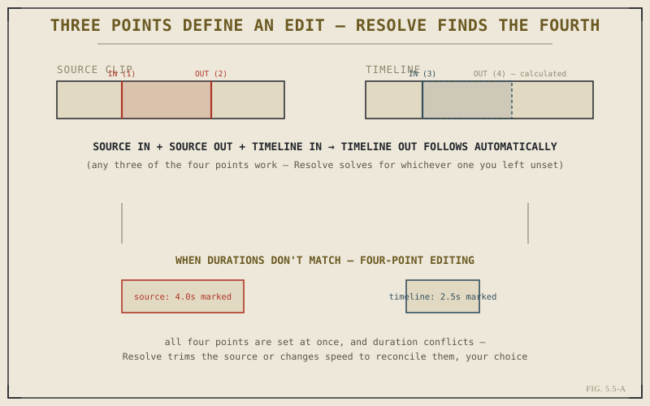

Chapter 4.4 introduced three-point editing briefly, in passing, while explaining Insert, Overwrite, Append, and Replace. This chapter delivers the fuller explanation promised back then — the actual logic underneath every one of those four actions, and every trim covered so far in this part. It's a small amount of underlying math, but understanding it directly clears up a specific kind of confusion that otherwise feels mysterious: why Resolve sometimes seems to "know" exactly where an edit should land with only partial information provided.
Why Three Points Are Enough
Every basic edit involves four meaningful points in time: where the source clip's usable material begins (source in), where it ends (source out), where that material should start on the timeline (timeline in), and where it should end on the timeline (timeline out). These four points aren't independent of each other — the distance between source in and source out has to equal the distance between timeline in and timeline out, since you can't fit five seconds of source material into a three-second gap without something giving. Because of that relationship, only three of the four points actually need to be specified. The fourth is always mathematically determined by the other three.

Set any three of the four points; Resolve solves for whichever one you left out.
This is exactly what happens, quietly, every time you use Append, Insert, Overwrite, or Replace from Chapter 4.4. Marking a source in and out, then placing the clip at the playhead's position on the timeline, gives Resolve three points — source in, source out, and timeline in — and it calculates the timeline out point automatically, as simply wherever that source duration naturally ends once placed. You've never needed to manually specify all four points for an ordinary edit, because three has always been enough, whether or not you were thinking about it in those terms.
Three-point editing isn't a special mode you opt into. It's what's already happening, invisibly, every time you place a clip — this chapter just gives the underlying logic a name.
When You Might Specify Different Combinations of Three
The specific three points you provide can vary based on what you're actually trying to control. Marking a source in and out, then a timeline in point, controls exactly which source material gets used, landing it wherever the playhead sits — the common case just described. Alternatively, marking a timeline in and out — defining an exact, fixed gap on the timeline you need to fill — plus a single source in point, tells Resolve to use exactly enough of the source material starting from that point to fill that gap precisely, calculating the source out point rather than the timeline out point. Both are three-point edits; they simply differ in which three points you chose to fix and which one gets calculated as a result.
Four-Point Editing: When All Four Points Are Specified and They Don't Agree
Sometimes you want to specify all four points deliberately — a precise source range and a precise timeline range, both fixed in advance. This is four-point editing, and it introduces a problem three-point editing never has to face: what happens when the marked source duration and the marked timeline duration don't match? Four seconds of marked source material doesn't fit cleanly into a two-and-a-half-second marked timeline gap, and something has to give.
Resolve handles this by asking you how to reconcile the mismatch, typically offering choices like trimming the source material to fit the timeline duration, discarding whatever doesn't fit, or changing the clip's playback speed so the marked source material stretches or compresses to exactly fill the marked timeline duration instead. Neither choice is automatically correct — it depends entirely on editorial intent, which is exactly why Resolve asks rather than silently guessing on your behalf.
Why This Logic Is Worth Knowing Explicitly
Most editors use three-point editing constantly without ever naming it, and that's fine for routine work. But understanding the underlying logic explicitly pays off specifically in situations that feel confusing otherwise: a Replace edit from Chapter 4.4 that seems to require a speed change unexpectedly, or an edit that behaves differently than you assumed it would. In nearly every such case, what's actually happening is a duration mismatch being resolved by exactly the four-point logic this chapter just described — not a bug or unpredictable behavior, but a well-defined system responding correctly to points you provided that didn't fully agree with each other.
With the logic underneath basic editing now fully explained, Chapter 5.6 moves to Dynamic Trim mode — a way of applying everything covered in this part so far, but driven by live playback rather than static point-marking, closing the gap between JKL's fluid navigation and the deliberate precision of ripple, roll, slip, and slide.
Key Concepts to Remember
- Four points define any edit — source in, source out, timeline in, timeline out — but only three need to be specified; the fourth follows automatically.
- Three-point editing is already happening, invisibly, behind every ordinary Insert, Overwrite, Append, or Replace edit.
- Four-point editing sets all four points deliberately, and asks you to resolve any duration mismatch — by trimming, discarding, or changing speed.
- Unexpected edit behavior is often four-point logic resolving a mismatch correctly, not unpredictable software behavior.
Cross-References Forward
| → Ch. 5.6 | Applies this part's trim logic through live, playback-driven Dynamic Trim mode instead of static point-marking. |
| → Ch. 4.4 | Revisit Insert, Overwrite, Append, and Replace now with the full three-point logic behind them explained. |
| → Pt. XIV | Genre & Format Workflows — speed-change reconciliation from four-point editing comes up often in music-driven cutting. (Not yet published.) |